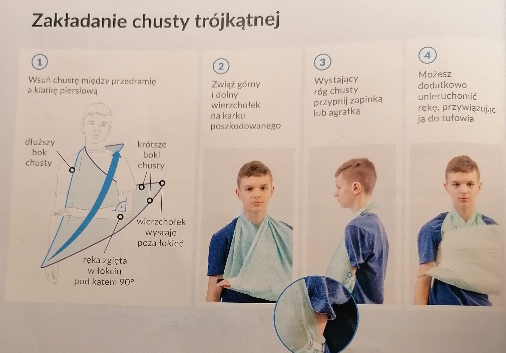

Złamania
Złamanie - całkowite przerwanie ciągłości kości.
Złamanie otwarte - złamanie, w którym odłamy kości przebijają tkanki i są widoczne na zewnątrz.
Typowe objawy złamania:
Silny, tępy ból w miejscu urazu.
Zmiana kształtu uszkodzonej kości.
Drżenie kończyny ze złamaną kością.
Nasilający się obrzęk.
Sińce i krwiaki.
Nieprawidłowa lub uniemożliwiona ruchomość.
Pierwsza Pomoc:
Jeśli to możliwe, posadź lub ułóż poszkodowanego w wygodnej pozycji.
Unieruchom złamaną kość razem z dwoma sąsiadującymi stawami. Jako szynę możesz wykorzystać sztywne
i proste przedmioty np. deskę. Szynę przytwierdź bandażem.
Jak najszybciej poinformuj o całej sytuacji kogoś dorosłego i weźwij Pogotowie Ratunkowe.
Jeśli doszło do złamania przedramienia, nadgarstka lub kości dłoni - usztywnij je sztywnym i prostym przedmiotem.
Następnie podwieś rękę za pomocą chusty trójkątnej, a jeśli jej nie masz możesz użyć np. bandaża, szalika, apaszki.
Rękę możesz dodatkowo usztywnić, przywiązując ją do tułowia.

Zwichnięcia
Zwichnięcie - przemieszczenie względem siebie kości tworzących staw.
Skręcenie - naruszenie tkanek miękkich otaczających staw, ale bez przemieszczenia kości.
Typowe objawy zwichnięć i skręceń:
Silny ból.
Ograniczenie ruchowe stawu.
Obrzęk w okolicach stawu.
Zniekształcenie stawu.
Krwiaki.
Pierwsza Pomoc:
Porozmawiaj z poszkodowanym. Co się stało, co go boli.
Pomóż mu przyjąć wygodną pozycję.
Zrób zimny okład w miejscu urazu.
Unieruchom dwie sąsiednie struktury kostne, postępuj jak przy złamaniu.
Urazy kręgosłupa
Typowe objawy urazów kręgosłupa:
Bardzo silny ból w miejscu urazu.
Mimowolne oddawanie moczu i kału.
Porażenie czuciowo-ruchowe kończyn.
Utrata przytomności
Pierwsza Pomoc:
Natychmiast weźwij Pogotowie Ratunkowe.
Zapobiegaj wszelkim ruchom, podtrzymuj delikatnie głowę poszkodowanego w zastanej pozycji.
Jeżeli nie ma takiej konieczności nie ruszaj poszkodowanego z miejsca zdarzenia.
Towarzysz poszkodowanemu, kontroluj jego stan i udzielaj wsparcia psychologicznego.
 Moje Bezpieczeństwo
Moje Bezpieczeństwo